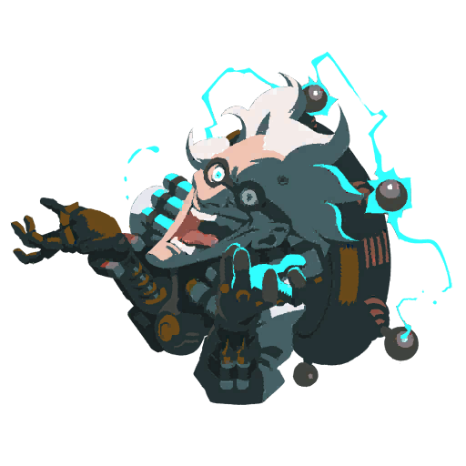

Junkenstein's Revenge
This is a four player co-op event that situates the players into using only four of the characters. Players may only use McCree, Soldier: 76, Hanzo and Ana, who are known as "The Gunslinger", "The Soldier", "The Archer" and "The Alchemist" respectively. The players must defend the castle gates in Adlersbrunn from Junkenstein, his creations and his allies. The game will automatically end if all players die. The event is a wave-based horde brawl that gets progressively harder as it progresses.
There are three different difficulty levels for this event, named "Easy", "Normal" and "Hard". During the brawl, players are given a performance rating, indicated by the stars on the top of the HUD. In Easy, two stars are locked, one is locked in Normal and all stars can be obtained in Hard. The rating is based on the number of Zomnics killed, how many times players die and how much damage is taken by the castle gates. At the top of the screen, a countdown timer shows the time remaining until the final wave. Beneath the timer is an indicator of the gates' health. Players' health and ultimate status are displayed in the top-left corner of the screen.